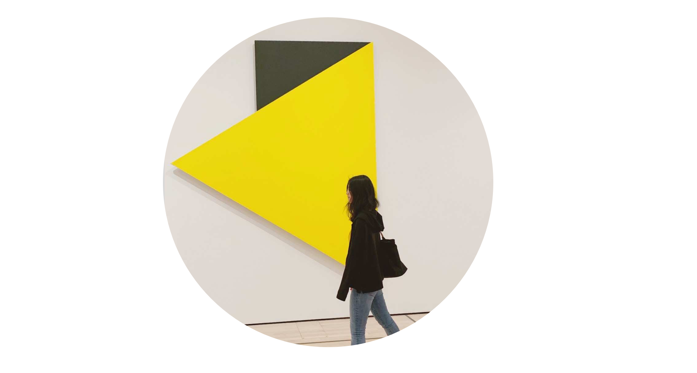

Hi there! I am Yingxiao
Moving pixels to push tech forward for more people.
Design Experience
Designer at Walmart, supply chain team, 2 years since 2019
UX design intern at Tencent, payment team, 4 months in 2018
UX design intern at Electrolux, home appliances team, 5 months in 2017
Web design intern at Datavibe, marketing team, 4 months in 2016
MS-HCI and MS-ID at Georgia Tech, 2015 to 2019
BE-ID at SCUT, 2011 to 2015
North Star🌟
I am pursuing meaningful, simple, and engaging design that empowers human. My design methodologies are Human-Centered Design and Evidence-Based Design. I follow two diamond design process, which allows me to understand the limits but also do things right.
Below is my favorite art advice from Sol Le Witt. It helps me pick up my brushes even at hard times. "Do something. Do anything. Don't worry about cool, make your own un-cool, make your own you-world."
Collobration Style 👩💻
My current work is about 40% teamwork and 60% individual projects. Teamwork has more 💡 moments, but individual work has more 😎 moments. But I enjoy both of them.
Communciation is very important in both ways. It is always designers' responsibility to clearly and accurately describe how users think and feel. Being honest but respectful is my approach no matter when we talk to product, another designer or developers.
How I become a UX designer 👣
I started my design journey back in September 2011 as an industrial design student. After spending three years learning hardskills like sketching, rendering and 3D modeling, I found my design passion in smart devices. For my undergraduate project, I spent a year to research, design and prototype a smart cradle for newborns. Looking back this was the first time I knocked on the door of User Experience.
Later in 2015, I was exposed to the challenging but interesting research world at School of Industrial Design at Georgia Tech. After several school projects, I discovered that I always spend more time thinking about user behaivors and user tasks rather than physical form. I still remember the weekend sitting in the libary, scratching one and another flow charts and trying to find out the best way to clean up flows for an interactive mirror project.
Encouraged by peers, I spent a year as a design intern in the real business world. In my internship in Charlotte, I got involved into user testing sessions at Electrolux and helped to modify flows of a type of dishwasher. In my internship in Tencent, I observed teenager group chats for two weeks and proposed a new design direction for social payment interaction for teenagers. This type of work motivated me and I felt this was something I want to do for the next 10-20 years.
Back to Atlanta, I spent more time systematically learn user research methods through projects and readings. I took the User Research Method class and a Cognitive Psychology class, which i treated as fingerposts of my UX career. I found faith in the previous experienments done by psychologists, like the one to distinguish familiarity from experienced by 200ms difference.
I moved to Bentonville Arkansas in 2019 and started my career as a full-time product designer at WalmartLabs. Right now, I am colloborating with product managers and developers to push warehouse products forward for Walmart assocaites.
When I am not working
I have been enjoying making stuff, it is a great way to interact with the real world. The MELX ring is a product designed and 3D printed to indicate inner confidence.
Drawing provide a way to grab beautiful moments of life. It is always great to hear the sound when pencils touch the paper. Practicing drawing humans for a year, I am always excited to find how tiny details indicate different personality.
Animation is a skill I aim to master. It is cool to create things that don't exist in the world yet make sense.
I am learning to grow tomatoes (12 cherry tomatoes grow out now 😎), jalopeno peppers, cilantro, lavander, and forget me not. And new shoots appear in my umbrealla tree several weeks ago!
Birds drop by my bird feeder every day. They are still afraid of me when I walk near the window. A bold squirrel 🐿️ visits me sometimes, and he can sit in the bird feeder for over 40 mins and eat all the food.